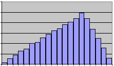
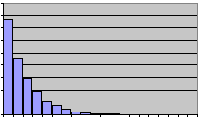
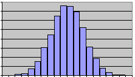
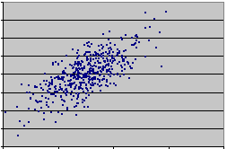
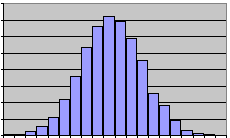
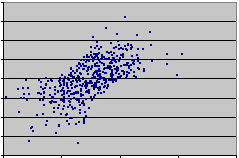
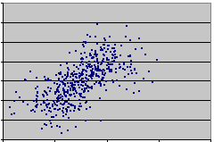

SUE - Stochastic Uncertainty Estimator
User Guide
11-1-02
Justin R. Goodman
Why SUE?
What does SUE do?
How do I make a SUE input file?
What does a typical input file look like?
I'm having trouble with SUE - any suggestions?
In any quantitative experiment or study involving calculations, the propagation of error through the calculations is of considerable
importance. If we were to calculate speed by measuring a distance traveled and the associated elapsed time, our computed speed would
have an associated uncertainty that would depend on the uncertainty of the two measured quantities. In such a simple case, generating
quantitative claims about the probable accuracy of the speed we computed would not be difficult. So long as only simple mathematical
operations are used in a calculation and so long as one can assume a roughly normal distribution of error for uncorrelated measurements,
there exist relatively simple formulas for propagating uncertainties through a calculation. Once we stray from these simple cases,
however, the propagation of uncertainty becomes more challenging.
It is clearly true that the realm of significant calculations extends beyond the simple cases adhering to the above assumptions.
We can imagine a calculation involving two measurements that are correlated with one-another, or perhaps we wish to perform a calculation
involving a measurement that we know to have a negative exponential uncertainty distribution. Maybe the calculation we wish
to perform is a regression involving measured parameters and a free variable. Perhaps one of the parameters we wish to use in a calculation
is something that is not easily measured and therefore an expert opinion with an associated probable range of values must be used instead.
For these cases, the simple error propagation methods mentioned above may be inappropriate either because of contradictions of assumptions
or because the calculations would simply be too tedious. This presents a problem because a calculated value is of limited use unless we
can give some sort of indication of how close that value is to the real value. This problem is exactly what the SUE
was designed to address.
Put concisely, SUE is a tool to create a sample space of parameters and convey requested information about the distribution of
those parameters to the user. This is best illustrated by an example. We will use a high-school as our sample space, where
each student is a sample. The sample space has parameters: height, age, sex, etc. Some of these parameters can be described by
distribution types - for example, we may be able to describe age as uniformly distributed over the interval 14 to 18.
We may declare weight to be normally distributed with mean 140 lbs and standard deviation of 20 lbs. There may be parameters that
can be described as functions of other parameters. Perhaps running speed can be described as some function of age, height, sex,
and athleticism. Once these parameters are established as general distribution types and functions of distribution types, we may
wish to know the standard deviation of a certain parameter or perhaps see a histogram of that parameter. We may wish to see the raw
sample values of a given parameter for external use or for comparison with real measured numbers to check the accuracy of proposed functions.
To solve these problems, the series of
parameter
definitions and queries would be input to SUE via an appropriate
input file.
The user is responsible for creating such an input file. SUE then reads the input file and utilizes Monte Carlo methods to
simulate repeated samplings from the input distribution types to populate the sample space. The sample space for a parameter
that is a function of other parameters is populated by repeatedly performing the function on samples of its independent parameters.
SUE takes an input file name as a command-line argument. This means from an MS-DOS Prompt window, you must type the name of the
file you wish SUE to process along with the name of the program (SUE) to make it run properly. For example, in MS-DOS, in the
directory containing both the program SUE and some input file "file.txt", typing
SUE file.txt
will run SUE on the file "file.txt" and the resulting files will be stored in the same directory.
The input file is made up of a sequence of actions (one per line) that will be performed in the order they occur in the file.
In addition to actions, there can be properly formatted user-comments in the input file that will be disregarded by SUE.
Line comments start with the ">" sign. Anything occurring on a line that begins with ">" will be disregarded by SUE.
The actual actions fall into three basic types: initialization actions,
parameter actions,
and query actions.
There are two initialization actions that must occur first in the input file, in the order listed below.
Seed seedNumber
Seed is the first action. Our pseudo-random number generator needs an odd integer with which to seed itself.
The number following the keyword "Seed" can be any odd integer between 1 and 1,000,000. Example:
Seed 1283
SampleSpaceSize size
SampleSpaceSize must be the second action of the input file. In order to generate a sample space with parameters,
we must know how big the sample space is. The number following the keyword "SampleSpaceSize" is the desired size.
This number must be an integer between 2 and 1,000,000. In the interest of quick computations, it is recommended
that the user restrict himself to sizes less than 100,000. Larger sizes may be attempted, but the run time of the program
may get to be quite long. Example:
SampleSpaceSize 10000
Parameter Actions are those that create or modify the parameters of the sample space.
|
parameterName = Uniform(lowerBound, upperBound)
This action creates a new parameter that has uniformly distributed samples over the interval lowerBound to upperBound.
The bounds can be any real numbers provided the first is smaller than the second. Example:
Var1 = Uniform(4, 4.9)
|
Histogram of Var1

|
|
parameterName = Triangular(lowerBound, mode, upperBound)
This action creates a new parameter that has samples consistent with a triangular distribution with lowerBound,
mode, and upperBound as specified. lowerBound, mode, and upperBound are real numbers
where lowerBound <= mode <= upperBound. Example:
LiveMax = Triangular(96.1, 99, 100)
|
Histogram of LiveMax

|
|
parameterName = NegativeExponential(lowerBound, standardDeviation)
This action creates a parameter that has samples consistent with a negative exponential distribution with lowerBound
and standardDeviation as specified. Restrictions are that the numbers must be real and standardDeviation
must be positive. Example:
VarIAblE = NegativeExponential(5.1, 3.2)
|
Histogram of VarIAblE

|
|
parameterName = Normal(mode, standardDeviation)
This action creates a parameter that has samples drawn from a normal distribution with mode and standardDeviation
as specified. Example:
Var = Normal(3, 1)
|
Histogram of Var

|
|
param1, param2 = NormalBivariates(correlation, param1mode, param1stdDev,
param2mode, param2stdDev)
This action creates two parameters. These parameters are drawn as though from a normal distributions with correlation,
modes and standardDeviations as specified. Correlation must be a real number between -1 and 1. Example:
b1, b2 = NormalBivariates(.5, .015, .001, 2, .1)
|
Scatterplot of 500 param1/param2 pairs created with
NormalBivariates using correlation coefficient 0.7

|
|
parameterName = expression
This action creates a parameter that is calculated from the expression. Example:
b3 = ln(LiveMax * (1-e^(-b1))^b2)
|
Histogram of b3

|
|
rankCorrelate(param1, param2, rankCorr, method)
This action produces a rank correlation of rankCorr in the two defined parameters param1 and param2.
There are two different methods for this operation: "grow" and "decay". These names have more to do with the
implementation than the produced correlation. "Grow" starts with the independently generated samples from param1 and
param2 and partially sorts them relative to one-another until the desired rank correlation coefficient is obtained.
"Decay" fully sorts param1 and param2 relative to one another and then partially unsorts them until the desired
rank correlation is obtained. When using rankCorrelate, try both methods and look at the differing scatter-plot
spreads produced to get a feel for the difference. The specifics of the different algorithms produce different spread types -
"Grow" should produce a more uniform spread, whereas "decay"
should yield a spread that looks somewhat normally distributed about an imaginary spline of best fit for the graph.
It may be the case that neither is appropriate for the data set that the user has in mind.
The user should be aware
that rank correlation is not the same as the more common correlation coefficient, though a high rank correlation
implies a high correlation coefficient. The advantage of rank correlation is that it is better suited to
describing correlation of parameters which come from different distribution types. In fact, certain combinations
of correlation coefficients, and distribution types are logically impossible. Try to imagine a uniform distribution
and a negative exponential distribution that have a correlation coefficient of 1. rankCorrelate allows the user to create
correlated parameters from different distribution types.
Example:
rankCorrelate(LiveMax, b2, -.78, grow)
|
Scatter-plot of two normal parameters correlated
with "Grow" method, rank correlation 0.7

Scatter-plot of two normal parameters correlated
with "Decay" method, rank correlation 0.7

|
Queriers return information about the sample space. This may come in the form of returning the average value of a parameter
or it may involve the generation of regression points for some function involving multiple parameters. One thing remains
constant among queriers: they do not alter the sample space in any way. This means they do not add, remove, or alter any of the
parameters. The following is a list of the querier actions and examples.
StandardDeviation(parameterName)
This action returns the standard deviation of the defined sample space parameter parameterName. Example:
StandardDeviation(LiveMax)
Mean(parameterName)
This action returns the mean value of the defined sample space parameter parameterName. Example:
Mean(LiveMax)
Median(parameterName)
This action returns the median value of the defined sample space parameter parameterName. Example:
Median(LiveMax)
Correlation(param1, param2)
This action returns the correlation coefficient of the defined sample space parameters param1 and param2. Example:
Correlation(LiveMax, b2)
RankCorrelation(param1, param2)
This action returns the rank correlation coefficient of the defined sample space parameters param1 and param2.
Example:
RankCorrelation(LiveMax, b2)
PercentileBounds(parameterName, percentile)
This action returns the two values that enclose the middle percentile percent of the values in sample
space parameter parameterName. Note that this may involve a weighted average of two samples for both the
upper and lower bound - so the values returned may or may not actually occur in the sample space. Example:
PercentileBounds(LiveMax, 50.5)
ValsToCSV(paramNameList, "fileName")
This action sends the values of the sample space parameters in paramNameList to a .csv (comma separated value) file named
"fileName". ParamNameList must be a series of defined parameter names, separated by commas. fileName
must be enclosed in quotation marks and should end in ".csv" since it will be a comma separated value file
(intended to be opened with Excel). Example:
ValsToCSV(LiveMax, b1, b2, Var1, "vals.csv")
Histogramize(paramName, boxes, excludedTailPercent, "fileName")
This action creates a histogram of the valid sample space parameter paramName.
The histogram comes in the form of a .csv file named filename that should end in ".csv" and is intended to be
viewed with Excel. Boxes is the number of boxes/bins to use in the histogram. ExcludedTailPercent is
the percent of extreme values in paramName to leave out of the histogram. For example, if excludedTailPercent
were 5, the histogram would not account for the lowest 2.5% or the highest 2.5% of the values in paramName.
ExcludedTailPercent should be set to 0 for most cases - however, when a parameter has very long, sparse tails,
leaving out a small portion of the tail values can make the histogram show more detail about more densely populated regions.
Obviously, excludedTailPercent must be between 0 and 100. Examples:
Histogramize(VarIAblE, 20, 0, "histWithTails.csv")
Histogramize(VarIAblE, 20, 5, "histMinus5%Tails.csv")
Regression(functionOfParamsAndT, tStart, tFinish, steps, "fileName")
This action creates a comma separated value file named fileName with the raw results of performing regression
equation functionOfParamsAndT on the sample space parameters mentioned in
functionOfParamsAndT.
functionOfParamsAndT can be any well-formed function that involves the free variable "T". "T" is the hard-wired
name of the free-variable in a regression equation and no other name will be accepted. Regression works by evaluating
functionOfParamsAndT for each set of parameter samples at steps + 1 discrete (and evenly spaced) T-values,
starting at tStart and finishing at tFinish. Upon completion of Regression, filename will have two columns;
the first will have free-variable values and the second will have solutions to functionOfParamsAndT for those
free-variable values. With a large sample space size and a large steps value, this file can be very large and take a long
time to create. Since Excel will not open entire files with more than 65,536 rows, it is senseless to have a product of
sampleSpaceSize and (steps + 1) > 65,000 unless you have another graphics program that reads larger .csv files.
Example:
Regression(LiveMax * (1-e^(-b1*t))^b2, 0, 400, 50, "regress.csv")
RegressionPercentiles(functionOfParamsAndT, tStart, tFinish, steps, (percentiles), "fileName")
This action is just as Regression only it takes another input - a list of comma-separated percentiles, percentiles,
enclosed in parentheses. Rather than return the computed results for each set of parameter samples for each T-value,
the enclosing values (at each T-value) for each percentile requested are returned in the .csv file. For example,
a value of 20 in the percentile list requests the values that enclose the middle 20% of all result values at each T-value.
A value of 0 in the percentile list requests the median for each T-value. Though RegressionPercentiles involves many
more calculations (due to calculating the percentiles) than Regression, the output file may be much smaller. It therefore
can accommodate larger sample space sizes in conjunction with large values of steps. Furthermore, with well-chosen
percentiles values, RegressionPercentiles can give a better picture of the distribution of values in the regression results.
Example:
RegressionPercentiles( LiveMax * (1-e^(-b1*t))^b2, 0, 400, 50, (0,25,50,75.0,100), "regressPercentiles.csv")
Parameter names must start with a letter, but can contain numbers and other symbols after the first character.
No action keywords (normal, regression, etc) or constant names (e and pi) may be used as parameter names.
Additionally, the name "T" is reserved for the free variable name in regression equations.
Assignment expressions and regression expressions are identical except in one regard:
regression functions should involve the free-variable "T" and assignment functions should not.
Outside of these restrictions, a valid expression can be any well-formed expression involving defined
parameter names, numbers, constants (e and pi), parentheses, +, -, *, /, ^, log10, and ln.
The following is a compilation of the examples used to define the actions.
It can be copied and pasted into a text file for use by SUE.
>------------------------------------------------------------------------
>A sample file for SUE---------------------------------------------------
>------------------------------------------------------------------------
Seed 1283
SampleSpaceSize 1000
Var1 = Uniform(4, 4.9)
LiveMax = Triangular(96.1, 99, 100)
VarIAblE = NegativeExponential(5.1, 3.2)
Var = Normal(3, 1)
b1, b2 = NormalBivariates(.5, .015, .001, 2, .1)
b3 = ln(LiveMax * (1-e^(-b1))^b2)
rankCorrelate(LiveMax, b2, -.78, grow)
StandardDeviation(LiveMax)
Mean(LiveMax)
Median(LiveMax)
Correlation(LiveMax, b2)
RankCorrelation(LiveMax, b2)
PercentileBounds(LiveMax, 50.5)
ValsToCSV(LiveMax, b1, b2, Var1, "vals.csv")
Histogramize(VarIAblE, 20, 0, "histWithTails.csv")
Histogramize(VarIAblE, 20, 5, "histMinus5%Tails.csv")
Regression(LiveMax * (1-e^(-b1*T))^b2, 0, 400, 50, "regress.csv")
RegressionPercentiles( LiveMax * (1-e^(-b1*t))^b2, 0, 400, 50, (0,25,50,75.0,100), "regressPercentiles.csv")
Q: Why does SUE tell me there's an error opening a file?
A: Most likely, it's Excel's fault. If a file is open in Excel, it can't be written to from SUE.
You must close the file in Excel and re-open it once SUE is done writing to it.
Q: Why is it taking SO long?!
A: Certain actions may involve MANY computer operations with large sample space size.
Regression and RegressionPercentiles can be particularly expensive this way.
Additionally, writing to a file is a relatively slow process, so actions that attempt to create large files may take a long time.
Either wait it out, decrease the sample space size, or chose your actions carefully.
Q: What does it mean if SUE tells me there has been a math error?
A: Math errors occur when SUE attempts an illegal or undefined math operation.
These can be encountered in one of two places: defining a parameter as a function of other parameters or in a regression function.
If we tried to define "var1" as
var1 = var2 / 0
we would clearly have a problem; regardless of what "var2" is, we would have division by zero.
While this example may be trivially obvious, there do exist more insidious possibilities.
With the abstraction of variable names representing a range and distribution of possible numbers, comes the surprising ease
of generating math errors. Consider the following:
b1, b2 = NormalBivariates(.5, .015, .008, 2, .1)
LiveMax = Triangular(96.1, 99, 100)
Regression(LiveMax * (1-e^(-b1*T))^b2, 0, 400, 50, "regress.csv")
The above differs from commands entered as examples only in that "b1" has a larger standard deviation.
This larger standard deviation, however, makes it more likely that "b1" will be a negative number.
The regression equation would then negate that number (thus making it positive), multiply it by positive T,
and subtract e to that power from one. E to any positive power is greater than 1.
Thus, we would end up with a negative number to a fractional (provided "b2" wasn't set to an integer) power,
which is undefined. What makes this even more complicated is that this problem may or may not occur, depending on
the sample space size and the seed. If we only generate a sample space of size 4, chances are good that "b1"
will have all positive samples and thus, no math error will occur.
Q: Why does SUE tell me it can't find a parameter?
A: Within an input file, references to parameters can only occur after the parameter has been defined.
Also beware that parameter names are case-sensitive. So if only "LiveMax" is defined, SUE will be unable to find a parameter
"livemax".
Q: What happens if I run an input file that causes SUE to create a file and then run another (or the same) input
file that causes a file of the same name to be created?
A: The first file will be overwritten; user beware.